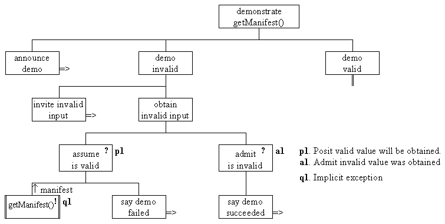

The design of the next part of the ManifestInputDemonstration, which demonstrates the getManifest() action, is as follows.
The demonstration commences with the component demo invalid which invites the user to enter an invalid manifest value. It then obtains an invalid input within a posit/ admit structure whose posit part calls the getManifest() method and collects the manifest value returned from it. If the user has, as requested, entered an invalid value then the call of getManifest() should throw an implicit exception and this is caught in the admit part of the structure which accordingly says that the demo has succeeded. If no exception is thrown the say demo failed part of the design will be executed and a message saying this will be output.

The demo valid part of the design is comparable in structure with the say demo failed and say demo succeeded parts exchanged.
The implementation of this design is as follows.
0026 System.out.println( "Demonstrating getManifest() action");
0027
0028 System.out.print( "\nPlease input a manifest value NOT IN the list ");
0029 try {
0030 colourValue = colourInput.getManifest();
0031 System.out.println( "No exception thrown ... which is NOT correct!" +
0032 "\nValue returned is " + colourValue);
0033
0034 } catch ( java.io.IOException exception) {
0035 System.out.println( "Exception thrown ... which is correct!");
0036 } // End try/ catch.
0037
0038 System.out.print( "\nPlease input a manifest value IN the list ");
0039 try {
0040 colourValue = colourInput.getManifest();
0041 System.out.println( "No exception thrown ... which is correct!"+
0042 "\nValue returned is " + colourValue);
0043 } catch ( java.io.IOException exception) {
0044 System.out.println( "Exception thrown ... which is NOT correct!");
0045 } // End try/ catch.
An interaction with this part of the demonstration client, with the users input shown in bold italic, might be as follows.
Demonstrating getManifest() action Please input a manifest value NOT in the list fred Exception thrown ... which is correct! Please input a manifest value IN the list green No exception thrown ... which is correct! Value returned is 3
When the user types in fred, line 0030 will throw a java.io.IOException which is caught on line 0034 and the message on line 0035 output.
When the user types in green, line 0040 will not throw a java.io.IOException and so the message on lines 0041 and 0042 is output, the manifest colorValue value returned from the getMainfest() action is output at the end of the second line. These values start at zero and as green is the fourth item in the list the appropriate value, as shown, is 3.